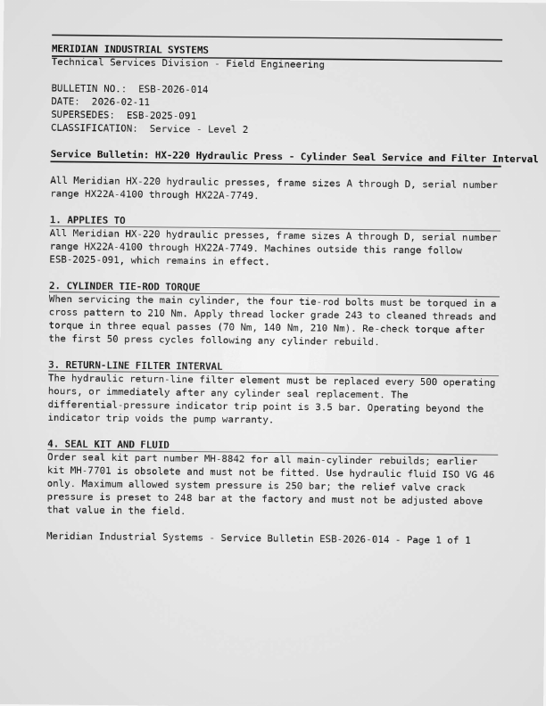

Module 02: Hands-on — ingest scanned documents with AutoRAG
In this module you will deploy the AutoRAG OCR demo stack, stage a scanned-PDF corpus with known ground truth, and create an AutoRAG optimization run over the scanned documents.
Learning objectives:
-
Deploy the
aocr-demo stack: pipeline backend, models, OGX server, pgvector -
Generate and stage a scanned-PDF corpus with a JSON evaluation dataset
-
Create an AutoRAG optimization run over the scanned PDFs in the wizard
All commands reference the deploy/ directory of this workshop
(features/feature-store-automl-autorag/autorag-ocr-ingestion/deploy in the
workshop assets repository). The stack uses project autorag-ocr-demo and the
resource prefix aocr- throughout. Every manifest in the stack is additive
demo runtime state — nothing GitOps-owned is patched, and the
DataScienceCluster is left untouched.
|
Every expected output shown in this module was captured live from the workshop cluster while authoring. Where a value is environment-specific (image digests, instance names), yours may differ. |
Exercise 1: Deploy the AutoRAG OCR demo stack
The stack follows the run order encoded in the deploy/ file numbers. You
need oc access as a cluster-admin-capable user and a MinIO object storage
deployment in namespace minio (the sandbox default).
cd features/feature-store-automl-autorag/autorag-ocr-ingestion/deploy
oc apply -f 00-namespace.yaml
./04-create-object-storage-secret.sh
oc apply -f 05-dspa.yaml
./06-create-pipeline-bucket.sh04 reads the MinIO credentials at runtime from the minio deployment and
creates the aocr-minio-creds Secret — no credential value is ever printed or
committed. 05-dspa.yaml creates the aocr-dspa DataSciencePipelinesApplication
with spec.apiServer.managedPipelines: {}, which compiles and uploads the
managed AutoRAG pipelines. 06 creates the aocr-pipelines artifact bucket
via an ephemeral mc pod.
oc wait dspa/aocr-dspa -n autorag-ocr-demo --for=condition=Ready --timeout=600s
./10-setup-runtime.sh
oc apply -f 11-models.yaml
oc apply -f 12-model-conn-services.yaml10-setup-runtime.sh instantiates the pre-installed vLLM CPU ServingRuntime
template into the project and re-pins its image to a live digest (the CSV’s
pinned digest returned manifest unknown at authoring time; the script header
documents the recovery). 11-models.yaml deploys two models:
-
aocr-llama32-3b-instruct— Llama 3.2 3B Instruct with tool calling enabled (--enable-auto-tool-choice --tool-call-parser=llama3_json), the generation model for the optimization run -
aocr-granite-embedding-english-r2— IBM Granite embedding, 768 dimensions, the vectorization model
12-model-conn-services.yaml creates the stable :8080 ClusterIP connection
services the OGX server registers as inference providers.
oc apply -f 20-pgvector.yaml
oc wait sts/aocr-pgvector -n autorag-ocr-demo --for=condition=Ready --timeout=300s
oc apply -f 21-ogxserver.yaml
oc apply -f 22-ogx-connection.yaml
./23-create-maas-connection.sh
oc apply -f 24-pgvector-connection.yaml20-pgvector.yaml runs PostgreSQL 16 with the pgvector extension (databases
ogx and ogx_metadata). 21-ogxserver.yaml registers the chat model, the
embedding model, and the pgvector database as providers of an OGX server.
22-ogx-connection.yaml creates the dashboard-visible OGX connection —
including the wizard keys (opendatahub.io/connection-type: ogx annotation
and the OGX_CLIENT_BASE_URL / OGX_CLIENT_API_KEY data keys) without which
the wizard’s OGX-connection dropdown renders empty.
Two more connections complete the wizard’s create-run contract:
23-create-maas-connection.sh creates the model-server connection the
wizard’s Step 1 lists — it derives MAAS_BASE_URL at runtime from the chat
model’s HTTPS route (the wizard rejects plain-HTTP and localhost base URLs)
and sets the demo dummy API key unused (vLLM validates no key).
24-pgvector-connection.yaml registers pgvector as the wizard’s Database
connection choice (opendatahub.io/connection-type: vector-db plus the
vector-db-provider: pgvector annotation).
Verify
Check the deployed stack:
oc get isvc -n autorag-ocr-demo
oc get ogxserver aocr-ogx -n autorag-ocr-demoExpected output (captured live):
NAME URL READY
aocr-granite-embedding-english-r2 https://aocr-granite-embedding-english-r2-autorag-ocr-demo.example.com True
aocr-llama32-3b-instruct https://aocr-llama32-3b-instruct-autorag-ocr-demo.example.com True
NAME PHASE PROVIDERS AVAILABLE
aocr-ogx Ready 3 1Both InferenceServices READY=True and the OGX server Ready with 3
providers (vllm inference, vllm embedding, pgvector). Confirm the providers
as the wizard sees them:
oc exec -n autorag-ocr-demo deploy/aocr-ogx -- \
curl -s http://localhost:8321/v1/providers \
| python3 -c 'import json,sys
for p in json.load(sys.stdin)["data"]:
print(p["api"], "|", p["provider_id"])'inference | vllm-inference
inference | vllm-embedding
vector_io | pgvectorThe vector_io provider must be declared under providers.vector_io of the
OGX server spec — a top-level vector_io key is ignored by the runtime, which
leaves the wizard’s Vector I/O provider dropdown empty.
Confirm the four connections the wizard’s create-run flow queries — all four
opendatahub.io/connection-type values must be present:
for c in aocr-maas-connection aocr-ogx-connection aocr-pgvector-connection aocr-s3-connection; do
oc get secret "$c" -n autorag-ocr-demo \
-o jsonpath='{.metadata.annotations.opendatahub\.io/connection-type}{" "}{.metadata.name}{"\n"}'
donemaas aocr-maas-connection
ogx aocr-ogx-connection
vector-db aocr-pgvector-connection
s3 aocr-s3-connectionEach annotation is what the wizard’s backend matches on when you select the model-server, OGX, database, and storage connections in the run wizard.
|
Two DSPA sub-conditions can show
|
Exercise 2: Prepare the scanned-PDF test data
The corpus is four one-page scanned Equipment Service Bulletins (Meridian
Industrial Systems). They are generated, not downloaded: each bulletin’s text
is rendered onto a raster image with scanner artefacts (noise, uneven
illumination, slight skew) and wrapped into an image-only PDF. The ground
truth text ships alongside each PDF as a .txt file, which feeds the
evaluation dataset.
python3 deploy/data/make-scanned-corpus.py
ls deploy/data/corpus/This requires Pillow (python3 -m pip install --user pillow). The generator
is deterministic — re-running reproduces the same corpus.
cd deploy/data/corpus
for f in *.pdf; do
echo "-- $f: text_chars=$(pdftotext "$f" - | tr -d '[:space:]' | wc -c) fonts=$(pdffonts "$f" | tail -n +3 | wc -l) images=$(pdfimages -list "$f" | tail -n +3 | wc -l)"
done-- ESB-2026-014-hydraulic-press.pdf: text_chars=0 fonts=0 images=1
-- ESB-2026-019-conveyor-motor.pdf: text_chars=0 fonts=0 images=1
-- ESB-2026-023-forklift-mast.pdf: text_chars=0 fonts=0 images=1
-- ESB-2026-027-air-compressor.pdf: text_chars=0 fonts=0 images=1Zero extractable characters and zero fonts on every page: AutoRAG’s
text_extraction stage must use OCR on this corpus, which is the point of
the exercise.

python3 -m json.tool deploy/data/eval-dataset.json | head -20Each entry carries a question, one or more correct_answers, and the
correct_answer_document_ids that contain the answer — the same shape the
base AutoRAG workshop teaches:
[
{
"question": "What torque must the HX-220 hydraulic press cylinder tie-rod bolts be torqued to, and in what pattern and passes?",
"correct_answers": [
"The four tie-rod bolts must be torqued in a cross pattern to 210 Nm. ..."
],
"correct_answer_document_ids": [
"ESB-2026-014-hydraulic-press.pdf"
]
}
]The dataset holds 10 questions across the four bulletins, including one cross-document question whose answer requires the whole corpus to have been ingested.
cd deploy/data
./setup-data.shThe script creates the aocr-corpus bucket (ephemeral mc pod), uploads the
four PDFs and eval-dataset.json into the single folder esb-corpus/, and
creates the aocr-s3-connection Secret from the runtime-substituted template
— including AWS_DEFAULT_REGION, without which the wizard’s Knowledge setup
fails with Required key AWS_DEFAULT_REGION is not set. The ground-truth
.txt files are deliberately not uploaded: recovering their content is the
OCR ingestion’s job.
Verify
List the bucket contents and the connection:
oc get secret aocr-s3-connection -n autorag-ocr-demo \
-o jsonpath='{.metadata.annotations.opendatahub\.io/connection-type}{"\n"}'s3And confirm all five objects are in the bucket (from any machine with mc):
$ mc ls --recursive local/aocr-corpus
[2026-11-27] 226KiB STANDARD esb-corpus/ESB-2026-014-hydraulic-press.pdf
[2026-11-27] 217KiB STANDARD esb-corpus/ESB-2026-019-conveyor-motor.pdf
[2026-11-27] 225KiB STANDARD esb-corpus/ESB-2026-023-forklift-mast.pdf
[2026-11-27] 225KiB STANDARD esb-corpus/ESB-2026-027-air-compressor.pdf
[2026-11-27] 5.3KiB STANDARD esb-corpus/eval-dataset.jsonOptional deep check (cluster admin): the dashboard BFF is what the wizard actually queries. Exec into the dashboard pod and probe the storage-connection endpoint with your OAuth token:
POD=$(oc get pod -n redhat-ods-applications -l app=rhods-dashboard -o jsonpath='{.items[0].metadata.name}')
oc exec -n redhat-ods-applications "$POD" -c rhods-dashboard -- bash -c \
"curl -sk -H 'x-forwarded-access-token: $(oc whoami -t)' \
'https://odh-dashboard-autorag-ui.redhat-ods-applications.svc.cluster.local:8743/autorag/api/v1/secrets?namespace=autorag-ocr-demo&type=storage'"Expected: a non-empty data array containing aocr-s3-connection with
AWS_S3_BUCKET: aocr-corpus in clear and credential fields [REDACTED] by
the BFF itself. Two interface gotchas, both live-verified: the BFF speaks
HTTPS on 8743 (plain HTTP answers Client sent an HTTP request to an HTTPS
server.), and the query value is type=storage — type=s3 returns 400.
Exercise 3: Create the AutoRAG optimization run over the scanned PDFs
With the stack up and the corpus staged, create the run in the wizard.
|
Optimization runs are created, not edited: choose metric, preset, and models before clicking Create run. To change a setting later, create a new run. |
-
In the RHOAI dashboard, click Gen AI studio > AutoRAG.
-
Select project
autorag-ocr-demo, then click Create AutoRAG optimization run. -
Enter a name (this workshop uses
aocr-scanned-bulletins-run) and optionally a description, select the model-server connectionaocr-maas-connection, and click Next. In 3.6 the wizard resolves models through the connection’s OpenAI-compatible/v1/modelsendpoint — the chat modelaocr-llama32-3b-instructis discovered this way; the OGX connection from Exercise 1 backs the vector store instead. -
Configure the details:
-
Knowledge setup — select S3 connection
aocr-s3-connection, then browse the bucketaocr-corpusand select the folderesb-corpus/(the four scanned PDFs). The folder becomes the pipeline’sinput_data_keysprefix, and Configure details opens once input data is selected. -
Evaluation dataset — select
esb-corpus/eval-dataset.jsonfrom the same bucket. -
Database connection — select
aocr-pgvector-connection(PGVector), the vector database registered as the OGX server’svector_ioprovider in Exercise 1. This is where the OCR’d chunks are indexed. -
Run preset — Faster (recursive chunking at 128/256/512 tokens) or Better quality (adds the hybrid chunking method, Docling table layout parsing, and larger chunks; see Module 03 for the trade-offs).
-
Optimization metric — qualified
evaluator:metricIDs; the defaultcustom:overall_scoreaggregates the evaluators your preset enables. Faster enables the unitxt and custom evaluators (for exampleunitxt:faithfulness); Better quality adds the ragas evaluator (for exampleragas:context_precision). -
Maximum RAG patterns — between 4 and 10, default 5.
-
-
In Model configuration, select one foundation model and one embedding model for the optimization to explore. The wizard marks a discovered model selectable only when its model server reports it ready.
-
Click Create run. AutoRAG submits the optimization pipeline, which discovers the scanned PDFs, extracts their text through OCR, chunks and vectorizes them, and starts exploring RAG configurations against your evaluation dataset.
|
Honest state from the authoring cluster: at authoring time this final step
was gated — MaaS model discovery reported the ISVC-backed model as
|
Verify
The run appears on the AutoRAG page with status Pending or Running, and progresses to Complete when all patterns are scored.
From the CLI, the run is an Argo workflow in the project:
oc get workflows -n autorag-ocr-demoYou should see a workflow for the optimization run once it starts. While it
runs, the pods executing the pipeline use the AutoRAG pipeline runtime image
(odh-autorag-rhel9) — the same image the rhods-operator 3.6.0 CSV pins as
RELATED_IMAGE_ODH_AUTORAG_IMAGE.
When the run reaches Complete, continue to Module 03 to evaluate the leaderboard and run the winning pattern over the scanned corpus.
Module summary
What you accomplished:
-
Deployed the
aocr-stack: DSPA with managed pipelines, tool-calling chat model, embedding model, pgvector, OGX server, and the wizard-visible OGX and S3 connections -
Generated a scanned-PDF corpus and proved it has no text layer (zero extractable characters, zero fonts), with a 10-question evaluation dataset of known ground truth
-
Created an AutoRAG optimization run over the scanned PDFs
Key takeaways:
-
The wizard reads its dropdowns from live contracts: the OGX connection must carry the wizard keys, the S3 connection must carry
AWS_DEFAULT_REGION, and the vector database must be avector_ioprovider of the OGX server -
The corpus is image-only by construction — anything AutoRAG answers about these bulletins, it learned through OCR ingestion
-
Runs are created, not edited; tune-and-restart is the workflow
Next steps:
Head to Module 03 to evaluate the results, run the RAG pattern in a workbench, and tune the OCR ingestion knobs.